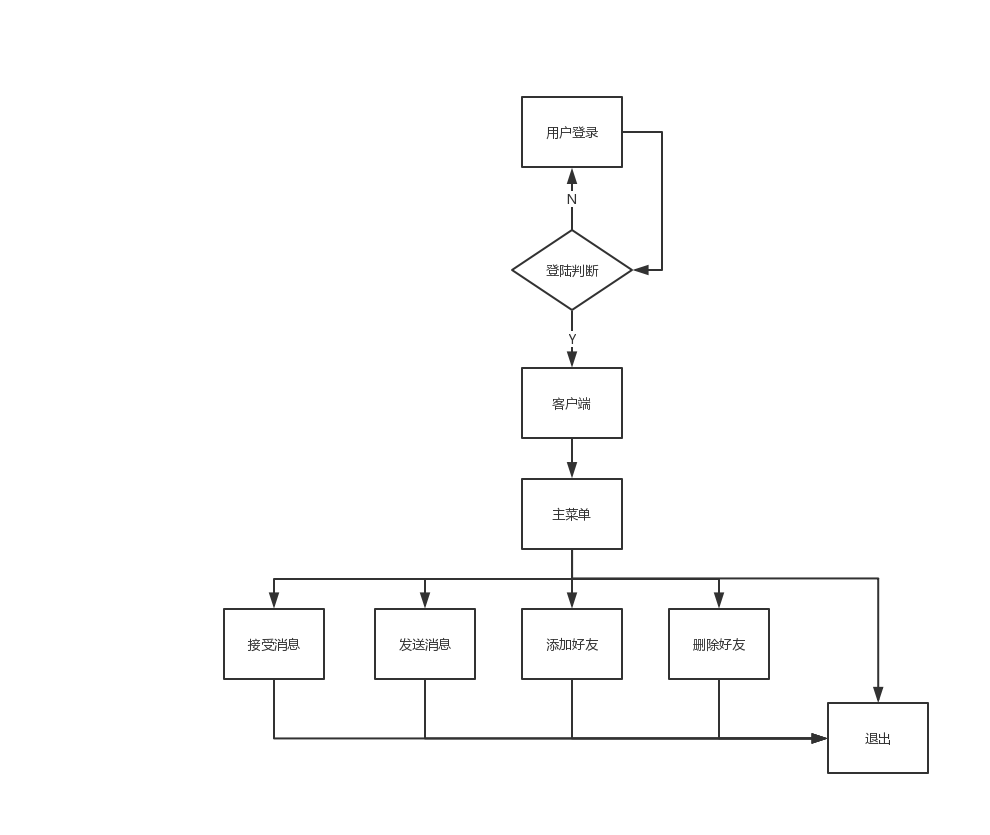
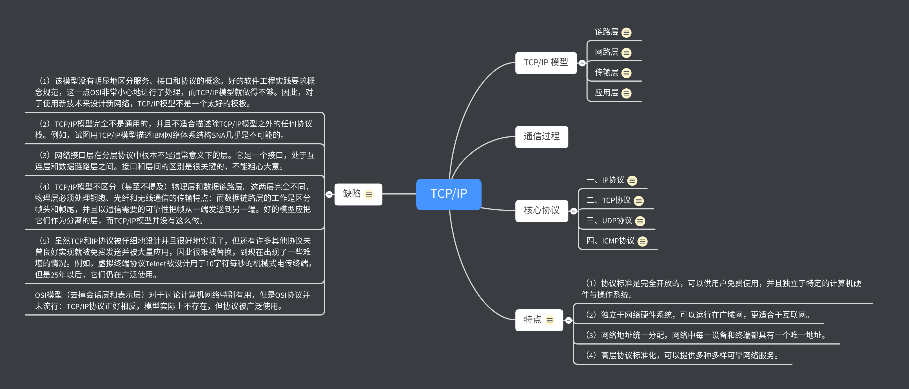

任务:
1.Git使用
- 初始化仓库
- 更改个git 名字
- 查看 暂存区状态
- 切分支
- 查看分支
- 回滚还原
- 查看历史提交
- 添加到待提交区，确定提交
- 添加远程地址
- 推代码
- 拉取代码
- 合代码
- 查看差异
- 解决冲突
2.绘制流程图
3.绘制思维导图
Day-2Git-命令安装git工作区和暂存区创建版本库将文件添加到版本库版本回退撤销修改删除文件远程仓库同步远程仓库从远程库克隆创建与合并分支合并冲突分支管理删除分支创建标签操作标签绘制流程图绘制思维导图
sudo apt-get install git
xxyl@xyl:~$ gitusage: git [--version] [--help] [-C <path>] [-c <name>=<value>][--exec-path[=<path>]] [--html-path] [--man-path] [--info-path][-p | --paginate | -P | --no-pager] [--no-replace-objects] [--bare][--git-dir=<path>] [--work-tree=<path>] [--namespace=<name>]<command> [<args>]这些是各种场合常见的 Git 命令：开始一个工作区（参见：git help tutorial）clone 克隆一个仓库到一个新目录init 创建一个空的 Git 仓库或重新初始化一个已存在的仓库在当前变更上工作（参见：git help everyday）add 添加文件内容至索引mv 移动或重命名一个文件、目录或符号链接reset 重置当前 HEAD 到指定状态rm 从工作区和索引中删除文件检查历史和状态（参见：git help revisions）bisect 通过二分查找定位引入 bug 的提交grep 输出和模式匹配的行log 显示提交日志show 显示各种类型的对象status 显示工作区状态扩展、标记和调校您的历史记录branch 列出、创建或删除分支checkout 切换分支或恢复工作区文件commit 记录变更到仓库diff 显示提交之间、提交和工作区之间等的差异merge 合并两个或更多开发历史rebase 在另一个分支上重新应用提交tag 创建、列出、删除或校验一个 GPG 签名的标签对象协同（参见：git help workflows）fetch 从另外一个仓库下载对象和引用pull 获取并整合另外的仓库或一个本地分支push 更新远程引用和相关的对象命令 'git help -a' 和 'git help -g' 显示可用的子命令和一些概念帮助。查看 'git help <命令>' 或 'git help <概念>' 以获取给定子命令或概念的帮助。
工作区
本地目录
版本库
工作区有一个隐藏目录.git，这个不算工作区，而是Git的版本库。
把文件往Git版本库里添加的时候，是分两步执行的：
第一步是用git add把文件添加进去，实际上就是把文件修改添加到暂存区；
第二步是用git commit提交更改，实际上就是把暂存区的所有内容提交到当前分支。
创建版本库目录
xxxxxxxxxxmkdir myGit
通过 git init命令把这个目录变成Git可以管理的仓库
xxxxxxxxxxxyl@xyl:~/myGit$ git init已初始化空的 Git 仓库于 /home/xyl/myGit/.git/
将文件放到版本库目录或子目录
把文件添加到暂存区
xxxxxxxxxxgit add 文件名
使用git commit把文件提交到版本库仓库
只会把暂存区的文件提交到版本库
xxxxxxxxxxxyl@xyl:~/myGit$ git commit -m 'testfile' # -m 本次提交的说明[master （根提交） 5261364] testfile1 file changed, 1 insertion(+)# 1个文件被改动，插入一行create mode 100644 test_git
使用git status 命令查看状态
使用git diff命令查看修改了那些东西
xxxxxxxxxxxyl@xyl:~/myGit$ echo 'test3' >> test_gitxyl@xyl:~/myGit$ git diffdiff --git a/test_git b/test_gitindex 72167ef..67edf0a 100644--- a/test_git+++ b/test_git@@ -1,2 +1,3 @@test111+test3
使用git log查看提交日志
commit id(版本号)
xxxxxxxxxxxyl@xyl:~/myGit$ git logcommit dea0f620a215804b8d70c29aa00e48fbc765b1ed (HEAD -> master)Author: 787119359 <787119359@qq.com>Date: Thu Jul 18 11:36:19 2019 +0800back_testcommit 61f04ac79fd56d61fc27d0a08e4078855030438bAuthor: 787119359 <787119359@qq.com>Date: Thu Jul 18 11:34:32 2019 +0800test3commit cd097f8a824eecdd2f4a0c78ac78c7608bd2ecdbAuthor: 787119359 <787119359@qq.com>Date: Thu Jul 18 11:28:17 2019 +0800test2commit 526136465a882088b223b7d43113bc3b7d1f094bAuthor: 787119359 <787119359@qq.com>Date: Thu Jul 18 11:20:35 2019 +0800testfile:
回滚到上次记录
xxxxxxxxxxxyl@xyl:~/myGit$ git reset --hard HEAD^HEAD 现在位于 61f04ac test3xyl@xyl:~/myGit$ cat test_gittest111test3
HEAD 表示当前版本
HEAD^ 上个版本
HEAD^^ 上上个版本
HEAD~100 上100个版本
回滚到指定记录
xxxxxxxxxxgit reset --hard 版本号
查看每一次命令git reflog
xxxxxxxxxxxyl@xyl:~/myGit$ git reflog61f04ac (HEAD -> master) HEAD@{0}: reset: moving to HEAD^dea0f62 HEAD@{1}: commit: back_test61f04ac (HEAD -> master) HEAD@{2}: commit: test3cd097f8 HEAD@{3}: commit: test25261364 HEAD@{4}: commit (initial): testfile
总结
HEAD指向的版本就是当前版本，因此，Git允许我们在版本的历史之间穿梭，使用命令git reset --hard commit_id。git log可以查看提交历史，以便确定要回退到哪个版本。git reflog查看命令历史，以便确定要回到未来的哪个版本。
使用 git checkout -- file可以丢弃工作区的修改
文件修改后还未放到暂存区
现在撤销修改就会回到和版本库一样的状态
文件已经添加到暂存区后又做了修改
现在撤销修改就会回到添加到暂存区后时的状态
git checkout -- file命令中的--很重要，没有--，就变成了“切换到另一个分支”的命令
在文件管理其中把没用的文件删除，git status 命令就会显示哪些文件被删除了
两种选择：
从版本库中删除该文件
xxxxxxxxxxgit rm file
删错了，从版本库中恢复
注意：从来没有被添加到版本库就被删除的文件，是无法恢复的！
xxxxxxxxxxgit checkout -- file# 只能恢复文件到最新版本，你会丢失最近一次提交后你修改的内容。
第1步：创建 SSH Key
xxxxxxxxxx$ ssh-keygen -t rsa -C "youremail@example.com"
第2步：登陆GitHub，打开“Account settings”，“SSH Keys”页面：
然后，点“Add SSH Key”，填上任意Title，在Key文本框里粘贴id_rsa.pub文件的内容
在本地仓库下运行命令
xxxxxxxxxx$ git remote add origin git@github.com:(用户名)/(库名).git
把本地库的内容推送到远程用git push
xxxxxxxxxxgit push -u origin master# 第一次推送master分支时，加上了-u参数，Git不但会把本地的master分支内容推送的远程新的master分支，还会把本地的master分支和远程的master分支关联起来，在以后的推送或者拉取时就可以简化命令。
xxxxxxxxxxgit push origin master
SSH 警告
因为Git使用SSH连接，而SSH连接在第一次验证GitHub服务器的Key时，需要你确认GitHub的Key的指纹信息是否真的来自GitHub的服务器，输入yes回车即可。
xxxxxxxxxxThe authenticity of host 'github.com (xx.xx.xx.xx)' can't be established.RSA key fingerprint is xx.xx.xx.xx.xx.Are you sure you want to continue connecting (yes/no)?
Git会输出一个警告，告诉你已经把GitHub的Key添加到本机的一个信任列表里了：
xxxxxxxxxxWarning: Permanently added 'github.com' (RSA) to the list of known hosts.
总结
要关联一个远程库，使用命令
git remote add origin git@server-name:path/repo-name.git；关联后，使用命令
git push -u origin master第一次推送master分支的所有内容；此后，每次本地提交后，只要有必要，就可以使用命令
git push origin master推送最新修改；
克隆一个库
xxxxxxxxxx$ git clone git@github.com:michaelliao/gitskills.git
xxxxxxxxxx$ git clone https://github.com/michaelliao/gitskills.git
原理
一开始的时候，master分支是一条线，Git用master指向最新的提交，再用HEAD指向master，就能确定当前分支，以及当前分支的提交点
每次提交，master分支都会向前移动一步，这样，随着你不断提交，master分支的线也越来越长。
当我们创建新的分支，例如dev时，Git新建了一个指针叫dev，指向master相同的提交，再把HEAD指向dev，就表示当前分支在dev上
从现在开始，对工作区的修改和提交就是针对dev分支了，比如新提交一次后，dev指针往前移动一步，而master指针不变
假如我们在dev上的工作完成了，就可以把dev合并到master上。Git怎么合并呢？最简单的方法，就是直接把master指向dev的当前提交，就完成了合并
合并完分支后，甚至可以删除dev分支。删除dev分支就是把dev指针给删掉，删掉后，就剩下了一条master分支
创建dev分支,然后切换到dev分支
xxxxxxxxxx$ git checkout -b devSwitched to a new branch 'dev'
git checkout命令加上-b参数表示创建并切换，相当于以下两条命令：
xxxxxxxxxx$ git branch dev$ git checkout devSwitched to branch 'dev'
git branch命令会列出所有分支，当前分支前面会标一个*号。
xxxxxxxxxx$ git branch* devmaster
git branch -r 列出远程库分支
xxxxxxxxxxxyl@xyl:~/myGit$ git branch -rorigin/master
合并分支
git merge命令用于合并指定分支到当前分支
xxxxxxxxxx$ git merge devUpdating d46f35e..b17d20eFast-forwardreadme.txt | 1 +1 file changed, 1 insertion(+)
删除分支
xxxxxxxxxx$ git branch -d devDeleted branch dev (was b17d20e).# 删除后，查看branch，就只剩下master分支了：$ git branch* master
小结
xxxxxxxxxx查看分支：git branch创建分支：git branch <name>切换分支：git checkout <name>创建+切换分支：git checkout -b <name>合并某分支到当前分支：git merge <name>删除分支：git branch -d <name>
master分支和feature1分支各自都分别有新的提交
这种情况下，Git无法执行“快速合并”，只能试图把各自的修改合并起来
xxxxxxxxxx$ git merge feature1Auto-merging test.txtCONFLICT (content): Merge conflict in readme.txtAutomatic merge failed; fix conflicts and then commit the result.
查看文件内容,Git用<<<<<<<，=======，>>>>>>>标记出不同分支的内容,需修改后在提交
xxxxxxxxxx$ git add test.txt$ git commit -m "conflict fixed"[master cf810e4] conflict fixed
用带参数的git log --graph也可以看到分支的合并情况：
xxxxxxxxxxxyl@xyl:~/myGit$ git log --graph* commit b9b7be6bd4c634211f6000773b47e703f183c937 (HEAD -> master)|\ Merge: fd6debe 0cbc932| | Author: 787119359 <787119359@qq.com>| | Date: Thu Jul 18 14:38:01 2019 +0800| || | conflict fixed| || * commit 0cbc93203c1c1fed87bec96ec44a809c2c6b5611| | Author: 787119359 <787119359@qq.com>| | Date: Thu Jul 18 14:30:24 2019 +0800| || | chongtu| |* | commit fd6debed120a74fb668ed797783f4bc2f086d6e2|/ Author: 787119359 <787119359@qq.com>| Date: Thu Jul 18 14:32:39 2019 +0800|| chongtu2|* commit a9442361e14210595f8acaa505c85d560c59c92e| Author: 787119359 <787119359@qq.com>| Date: Thu Jul 18 14:14:45 2019 +0800|| branch test|* commit 563435b6026633af9abf7287cae5a7858022dc52 (origin/master)| Author: 787119359 <787119359@qq.com>| Date: Thu Jul 18 13:32:14 2019 +0800|| push_test
通常，合并分支时，如果可能，Git会用
Fast forward模式，但这种模式下，删除分支后，会丢掉分支信息。如果要强制禁用
Fast forward模式，Git就会在merge时生成一个新的commit，这样，从分支历史上就可以看出分支信息。
🈴并dev分支，使用--no-ff参数，表示禁用Fast forward
xxxxxxxxxxxyl@xyl:~/myGit$ git merge --no-f -m 'merge with no-f' devMerge made by the 'recursive' strategy.test2.txt | 1 +1 file changed, 1 insertion(+)
因为本次合并要创建一个新的commit，所以加上-m参数，把commit描述写进去。
合并后，我们用git log --graph 看看分支历史
xxxxxxxxxxxyl@xyl:~/myGit$ git log --graph* commit 76b69774fbd8821ec3c2c2606173618c91dc9b1b (HEAD -> master)|\ Merge: b9b7be6 60f4aa0| | Author: 787119359 <787119359@qq.com>| | Date: Thu Jul 18 14:55:53 2019 +0800| || | merge with no-f| || * commit 60f4aa0c808c5259e9e3209d690a98f7512fec0e (dev)|/ Author: 787119359 <787119359@qq.com>| Date: Thu Jul 18 14:54:39 2019 +0800|| add merge|* commit b9b7be6bd4c634211f6000773b47e703f183c937|\ Merge: fd6debe 0cbc932| | Author: 787119359 <787119359@qq.com>| | Date: Thu Jul 18 14:38:01 2019 +0800| || | conflict fixed| || * commit 0cbc93203c1c1fed87bec96ec44a809c2c6b5611| | Author: 787119359 <787119359@qq.com>| | Date: Thu Jul 18 14:30:24 2019 +0800| || | chongtu| |* | commit fd6debed120a74fb668ed797783f4bc2f086d6e2|/ Author: 787119359 <787119359@qq.com>| Date: Thu Jul 18 14:32:39 2019 +0800|| chongtu2
小结:
合并分支时，加上
--no-ff参数就可以用普通模式合并，合并后的历史有分支，能看出来曾经做过合并，而fast forward合并就看不出来曾经做过合并。
两种情况:
丢弃一个合并过的分支
xxxxxxxxxxgit branch -d 分支名
强行丢弃一个未合并过的分支
xxxxxxxxxxgit branch -D 分支名
打标签
切换到需要大标签的分支上,然后敲命令git tag <name>
查看所有标签:git tag
注意: 标签按字母排序
在指定 commit 上打标签
xxxxxxxxxxgit tag <标签名> <commit id>
用 git show <tagname> 查看标签信息
xxxxxxxxxx$ git show v0.9commit f52c63349bc3c1593499807e5c8e972b82c8f286 (tag: v0.9)Author: Michael Liao <askxuefeng@gmail.com>Date: Fri May 18 21:56:54 2018 +0800add mergediff --git a/readme.txt b/readme.txt...
创建带说明的标签,-a指定标签名,-m指定说明文字
xxxxxxxxxx$ git tag -a v0.1 -m "version 0.1 released" 1094adb
小结
命令
git tag <tagname>用于新建一个标签，默认为HEAD，也可以指定一个commit id；命令
git tag -a <tagname> -m "blablabla..."可以指定标签信息；命令
git tag可以查看所有标签。
删除标签
xxxxxxxxxx$ git tag -d v0.1Deleted tag 'v0.1' (was f15b0dd)
推送标签到远程,使用命令git push origin <tagname>
xxxxxxxxxx$ git push origin v1.0Total 0 (delta 0), reused 0 (delta 0)To github.com:michaelliao/learngit.git* [new tag] v1.0 -> v1.0
一次性推送全部为推送到远程
xxxxxxxxxxgit push origin --tage
删除远程库标签
先从本地删除
xxxxxxxxxx$ git tag -d v0.9Deleted tag 'v0.9' (was f52c633)
然后从远程删除,删除命令也是push
xxxxxxxxxx$ git push origin :refs/tags/v0.9To github.com:michaelliao/learngit.git- [deleted] v0.9
使用工具：

使用工具：
